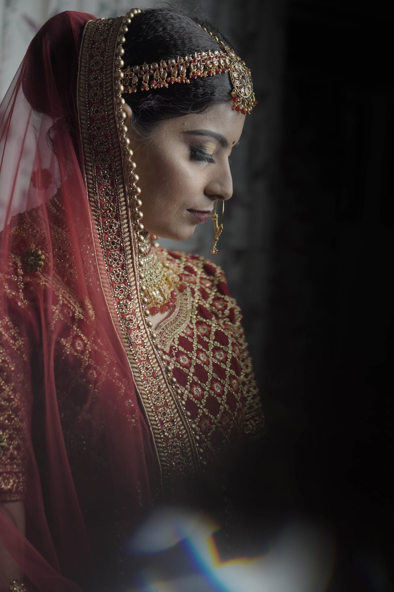
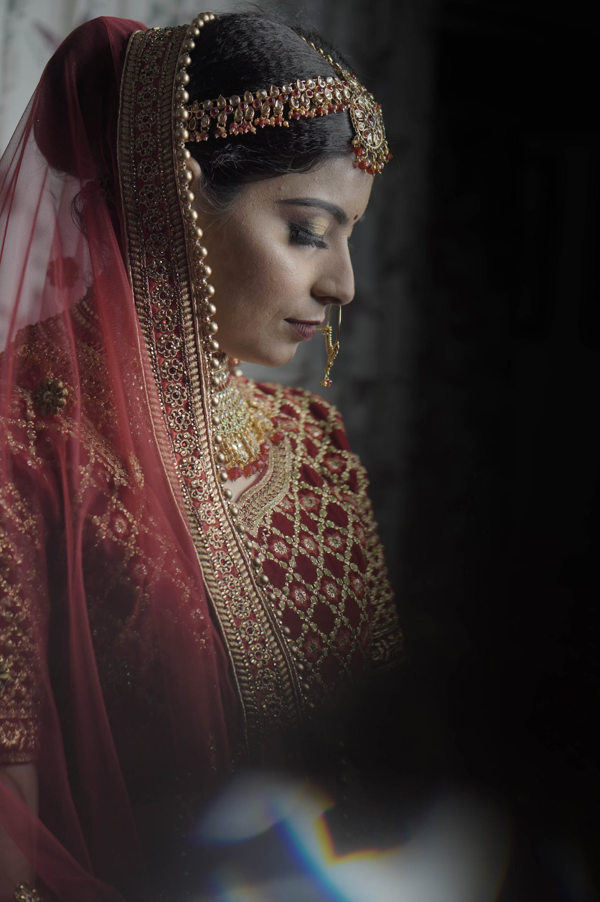

SERVICE
Wedding
Engagement
Photoshoot
Birthday party

The Greek meaning of 'photo' translates to 'light' while 'graphy' translates to 'drawing. ' Therefore, the word photography can quite literally translate to light drawing or drawing with light. Simply put, photography is the process of capturing light to create an image.Photography's major purposes are communication and the recording of ephemeral moments in time. Since the invention of photography, humans have had the ability to create works of art using light. Thanks to photography, we can now visualise the past, depict the present, and imagine the future.Photographs are used to tell stories in many different ways. Sciences use photography to document new plants or to be able to study animals in more depth. Photos are used in text books to teach students about different places around the world. Family portraits hang on walls of almost every home.For a start, you will have to be able to have a long, hard look at the pictures. And you will need to start writing about them before it's all done. Don't approach writing about your photographs by making them first, and then getting to writing about them. That's not a good idea.It's In The Details – As photographers we notice the small things. It's the details that bring an experience together. We notice textures, nature, light, expressions, and surroundings. This allows us to capture the beauty in every situation.Photography has been used throughout history and into the present day as a tool for science and exploration; as a means of documenting people, places and events; of telling stories and recording histories; and as a mode of communication and critique in our increasingly visual culture.
Photography as an art is about seeing the world in a different way. Artists feel the need to look at the world differently. It is a quintessential part of their being; they need it to feel inner balance. Art in itself is a tool that helps us feel inner balance.The word “photography” literally means “drawing with light”. The word was supposedly first coined by the British scientist Sir John Herschel in 1839 from the Greek words phos, (genitive: phōtós) meaning “light”, and graphê meaning “drawing or writing”.Photography was invented by Frenchman Nicéphore Niépce in 1822. Niépce developed a technique called heliography, which he used to create the world's oldest surviving photograph, View from the Window at Le Gras (1827). Heliography was conceived in response to camera obscura theories dating back to ancient history.Photography helps you capture anything you feel is important to remember. One photograph is powerful enough to not only remind you of an event or detail, but can bring you right back to the feelings, sounds, and even smells of the moment.
 
